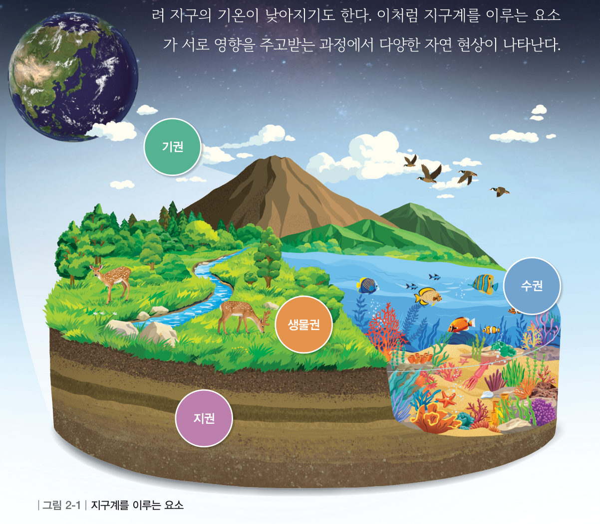
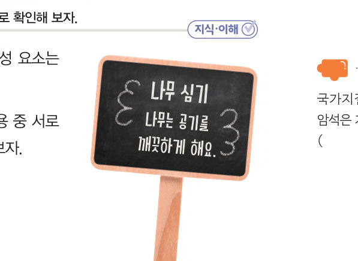

살아있는 교과서 · Ⅱ. 지권의 변화 · 1. 지권의 구성 · 01 45~47쪽
여러 요소로 이루어진
여러 요소로 이루어진
지구계
“광활한 바다가 너무 멋있어.” “내 뺨을 스치는 바람도 너무 시원해.” 우리가 사는 지구는 어떤 것들로 이루어져 있을까? 여행 계획 속 지구를 이루는 것을 분류하고, 지구계 구성 요소가 서로 주고받는 영향을 지도에 이어 보자.
🎯 이 단원을 배우면 — 지구계를 이루는 요소를 설명할 수 있다.
첫 번째 블록국가지질공원에서 본 암석과 관련된 지구계 구성 요소는 어떤 특징이 있을까? 45쪽
“경북 동해안 국가지질공원에서 볼 수 있는 특이한 모습의 암석이야.” “예술 작품 같은 풍경이 웅장하고 신비로워.” 이 단원의 힌트 조각을 모으면 지구계의 구성 요소를 학습하여 첫 번째 블록 질문에 답할 수 있다.
이 단원과 관련해 이미 알고 있는 것에 표시해 보자.
해 보기지구계를 이루는 요소 알아보기 46쪽
누리의 여행 계획 — 여행 장소: 설악산 · 설악산을 올라가면서 예쁘게 물든 야생화를 살펴보기 · 정상에서 시원한 바람을 맞으며 동해 사진 찍기. 아래 낱말을 누른 뒤 알맞은 범주 상자를 눌러 분류해 보자.
💬나의 여행 계획을 세우고, 계획 속에서 지구를 이루는 것을 찾아 땅·물·공기·생물로 분류해 보자.
교과서지구계와 구성 요소 47쪽
지구를 이루는 땅, 물, 공기, 생물 등은 서로 영향을 주고받으며 하나의 계를 이루는데, 이를 지구계라고 한다. 그림 2-1과 같이 지구계는 지권, 수권, 기권, 생물권, 외권으로 이루어져 있다. 지권은 지구 표면과 지구 내부로 이루어져 있고, 수권은 바다, 빙하, 지하수, 강, 호수 등 지구에 있는 물로 이루어져 있으며, 기권은 지구를 둘러싸고 있는 대기로 이루어져 있다. 그리고 생물권은 지구에 사는 모든 생물을 말하며, 지권, 수권, 기권에 걸쳐 분포하고 있다. 외권은 기권의 바깥 영역인 우주 환경을 말한다.
지구계를 이루는 요소는 서로 끊임없이 영향을 주고받는다. 예를 들어 강물의 영향으로 강 주변 지형이 변하기도 하고, 화산이 폭발하면서 나온 화산재가 햇빛을 가려 지구의 기온이 낮아지기도 한다.

상호작용 지도누가 누구에게 영향을 줄까?
사건 카드를 고르면 지도에 화살표가 그려져요. 영향을 주는 요소와 받는 요소를 각각 골라 보자.
| 사건 | 영향을 주는 요소 | 영향을 받는 요소 |
|---|
스스로 확인하기46쪽 학습 목표를 달성했는지 확인해 보자 47쪽
1개념 확인 지권, 수권, 기권에 걸쳐 분포하는 지구계의 구성 요소는 이다.

2사고력 나무 심기를 홍보하는 팻말 “나무는 공기를 깨끗하게 해요.”에서 서로 영향을 주고받는 지구계 구성 요소는 어떤 것인지 설명해 보자.
🧩 첫 번째 블록 · 힌트 조각 1 (47쪽)
국가지질공원에서 볼 수 있는 암석은 지구계를 이루는 요소 중 ( )에 해당한다.
5분 테스트여러 요소로 이루어진 지구계
1지구를 이루는 여러 요소가 서로 영향을 주고받는 하나의 계를 라고 한다.
2옳으면 O, 옳지 않으면 X
| ② 지구 표면에 드러난 단단한 부분만 지권이라고 한다. | |
| ③ 지구에 있는 물을 수권이라고 한다. | |
| ④ 지구를 둘러싸고 있는 대기를 기권이라고 한다. | |
| ⑤ 지구 중 수권에 사는 생물을 생물권이라고 한다. | |
| ⑥ 외권은 지표 위 대기부터 우주까지를 포함한다. |
3⑦ 생물권이 분포하는 곳을 모두 고르시오.
⑧ 지구계를 이루는 요소는 .
스스로 정리하기지구계
1지구계
⑴ 지구계: 지구를 이루는 요소가 서로 영향을 주고받으며 이루는 하나의 계 — 지권, , 기권, 생물권, 으로 이루어져 있다.
⑵ 지구계를 이루는 요소는 서로 끊임없이 영향을 주고받으며, 이 과정에서 다양한 자연 현상이 나타난다.
⑵ 지구계를 이루는 요소는 서로 끊임없이 영향을 주고받으며, 이 과정에서 다양한 자연 현상이 나타난다.
| 평가 기준 | 스스로 평가 |
|---|---|
| 지식·이해 지구계를 이루는 요소를 설명할 수 있는가? | |
| 가치·태도 지구를 이루는 것을 분류하고 이야기하면서 자연에 대한 감수성을 느꼈는가? |
제출학생 정보 · 제출하기
모든 활동을 마친 뒤 제출하면 전체가 한 번에 채점되고 피드백이 나타나요. 답안은 선생님 스프레드시트(중2 탭)에 기록돼요.